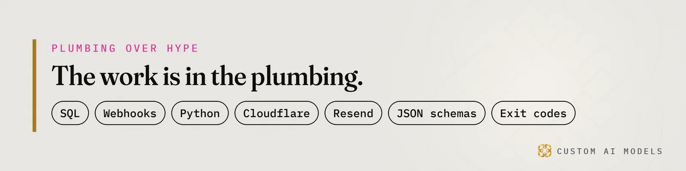
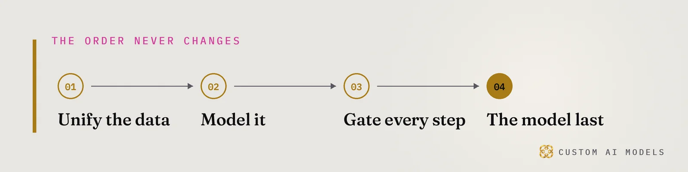

Custom AI Models
Custom AI Models Yeriko Vargas · Founder, Custom AI Models · Oct 2026
Yeriko Vargas · Founder, Custom AI Models · Oct 2026Short answer. AI search engines cite pages they can fetch, read and lift a clean answer from. No engine publishes its full ranking formula, so anyone selling a secret trick is guessing. What you control is plain: crawlable HTML, one canonical URL, a direct answer under a clear heading, and facts that agree everywhere your business appears.
How do AI search engines pick which websites to cite?
ChatGPT search, Copilot, Perplexity and Gemini do the same job in rough outline. They take a question, fetch candidate pages, pull passages out of them, and write an answer that points back to a few sources. A page that cannot be fetched cannot be cited. A page whose passages need the surrounding context gets skipped for one that stands alone.
Each engine weighs things differently, and the weights change without notice. I will not hand you a ranking factor list, because nobody outside those companies has a verified one. I can describe what pages look like when they keep getting lifted: boring, explicit and consistent.
Think of it as retrieval with a citation attached. It is the same problem we cover in RAG isn't a feature. It's an architecture. Your website is the corpus. The engine is a retriever with opinions. If the corpus is messy, the retriever picks someone else's.

What does a page need before an engine can quote it?
A page is quotable when one paragraph under one heading answers one question in plain words. That passage should make sense if an engine lifts it alone, with no navigation, no intro and no earlier paragraph to lean on. Name the thing, state the claim, then add detail. If your best sentence opens with a pronoun, the engine has nothing to cite.
Run this checklist before anything else:
- Crawlable HTML: the answer sits in the server response, not behind a script that builds it later.
- One canonical URL per page, one host, no duplicate copies fighting each other.
- Answer-first passages under headings phrased like the questions people type.
- Structured data that repeats only what the page visibly shows.
- Facts that match your listings, profiles and other pages word for word.
None of this is exotic. It is the hygiene search needed before AI engines arrived. The difference is that a person might forgive a vague page. A retrieval system just moves on to the next candidate.
Why does a good site still get ignored?
Because the page was written for a visitor who already trusts you. Engines arrive cold. They hit a cookie wall, an empty script shell, a crawler rule you forgot about, or a headline that says nothing, and they leave. The quality of your business never enters the fetch. Only what the machine can read does.
Failure modes worth checking first:
- A
robots.txtrule that blocks crawlers by accident. - Content that appears only after JavaScript runs.
- The same page reachable on two hosts, with and without
www. - Vague headings like Our Approach or Why Us.
- Pages that contradict each other on services, names or locations.
Most of these are data problems in a marketing costume. Your site is a dataset. When it contradicts itself, the engine cannot tell which version is true, so it cites a competitor whose version is consistent. We made the same argument about spreadsheets in Your AI didn't fail. Your data did. The model was fine. What sat underneath it was not.

Can you measure whether AI engines cite you?
Yes, with ordinary plumbing. Server logs record which crawlers fetch which URLs. A scheduled Python job can ask each engine your customers' real questions, save the cited sources as rows, and compare them week over week. That is telemetry for visibility. It lives in your own database, not in a vendor dashboard that changes its definitions.
Expect noise. The same question can return different sources on different runs, so one answer proves nothing. Sample repeatedly, store every raw response, and treat each citation as a claim until the log agrees. That habit is the spine of Twelve tools, one Python pipeline, where every call is a claim until a check proves it.
- List the real questions your buyers type.
- Run them on a schedule through each engine.
- Store the raw response and the cited URLs.
- Match them against crawler hits in your server logs.
- Review the diff, then fix one page at a time.
Gate every page the way you gate code
Custom AI Models builds Python pipelines on a client's own data, and content follows the same order as everything else we build: unify the data, model it, gate every step, the model last. A draft passes a validator or it is thrown away. Word counts, heading ladder, host name, link targets, banned phrases. Exit code zero publishes. Anything else does not.
A model can draft the page. It should never decide whether the page ships. That call belongs to deterministic validation gates, the idea behind The model is a stage. The program is the system. I have spent 8.5 years in data, and the lesson repeats. The model is a commodity. The checks are what you keep.
If you tried an AI content demo and watched it publish something wrong, this is the fix. Put the rules in code, log every rejection, and let the engines find a site that never contradicts itself.
Questions people ask
Do I need to rewrite my whole site to get cited?
No. Start with the five pages that carry your revenue: services, contact, and your strongest articles. Put a direct answer under each heading, fix the host and canonical URL, and confirm the HTML carries the text. Rewrite the rest only after the logs show those pages being fetched.
How long until AI engines start citing a new page?
No engine publishes a timeline, so any number you hear is a guess. What you control is whether the page is fetchable on day one. Check the server log for crawler requests, then watch your sampled questions week over week. Trust the log and the stored responses over anyone's promise.
Does schema markup guarantee a citation?
No. Structured data helps a machine read what the page already says, and it must match the visible text. It will not rescue vague copy or a blocked crawler. Treat it as labeling, add only what the page shows, and validate it in code so markup never drifts from content.
Should I block AI crawlers?
That is a business decision with a cost either way. Blocking keeps your content out of generated answers. Allowing it makes citation possible, not guaranteed. Decide per section of the site, write the rule in robots.txt on purpose, and test it, because accidental blocks are the failure we check first.